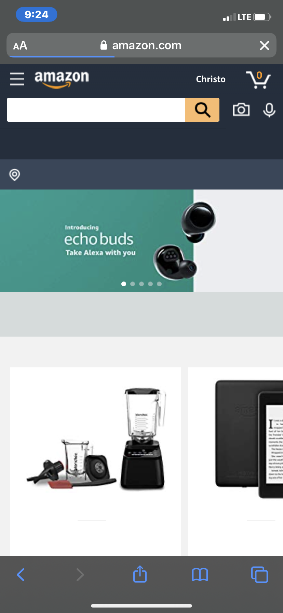
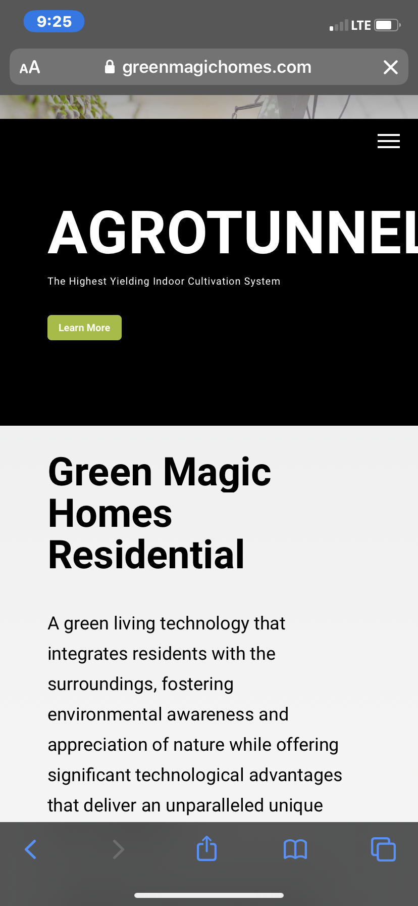

Design Principles Document
Christopher Peck
White Space:
Amazon
https://amazon.com/

This is a depiction of the white space and clean design principle. Amazon has white space and
padding around all of their products. It segments the individual products properly and has a nice
look to
it.
Proximity:
Green Magic Homes
https://greenmagichomes.com

This website shows proximity. Because the items are grouped together in an organized way, and they
are close to one another, we consider them all part of one group. If they were spread out evenly, we
wouldn't know where one stopped and the next started.
Hick's Law:
Wix
https://wix.com
 This shows Hick's law pretty well. It only gives one option - Learn more. This minimizes the amount
of time people have to think about what they want. If they are on their website, they probably want
to
learn more and that option is provided.
This shows Hick's law pretty well. It only gives one option - Learn more. This minimizes the amount
of time people have to think about what they want. If they are on their website, they probably want
to
learn more and that option is provided.